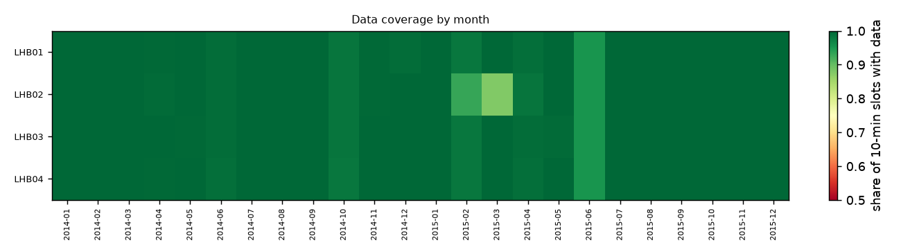
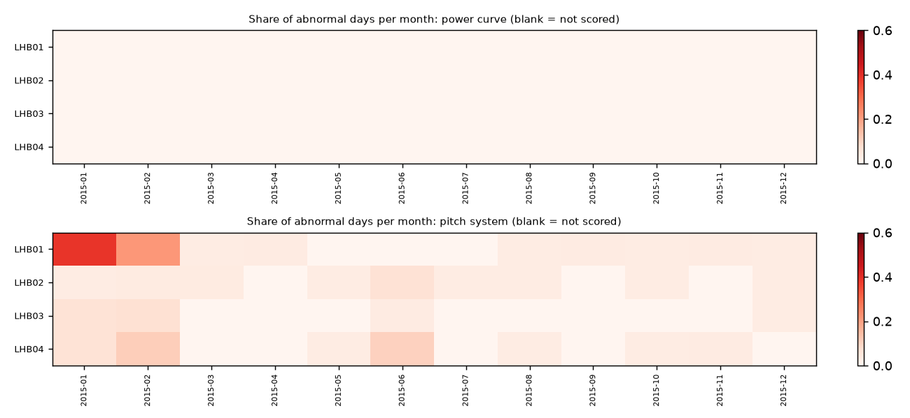
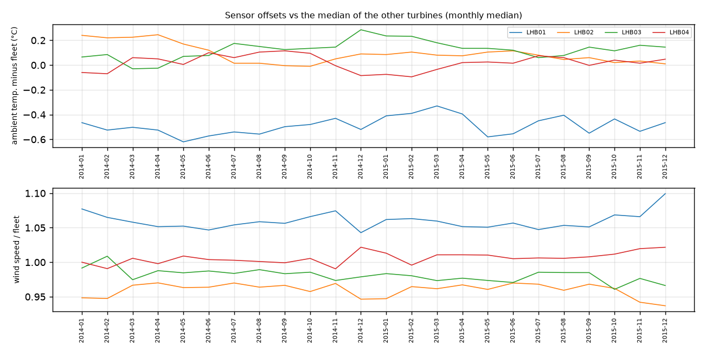

La Haute Borne wind farm (4x Senvion MM82 2050 kW, France), ENGIE open data via NREL OpenOA. 4 turbines, SCADA 01 Jan 2014 to 31 Dec 2015; assessment window: the last 24 months of each turbine (Jan 2014 to Dec 2015). Generated by windml report from the mapping la_haute_borne.yaml.
All 4 turbines are green: no validated warning sign in the data up to 31 Dec 2015. Green is not a guarantee; see the notes and limits below.
Green: LHB01, LHB02, LHB03, LHB04.
How the ratings work. A turbine is amber only for a specific, unusual pattern: gear-oil pump pressure building up far beyond its sister turbines, repeated oil-system or pitch trips, or a faulty sensor. It is red when the pattern is strong (e.g. a pump pressure rise of 2 bar or more) or persistent and still active. Thresholds were chosen on 2017-2020 data from two UK wind farms and checked on 2021-2024: amber or red turbine-months were followed by a logged fault, trip or long service stop within 90 days 76% of the time, against 50% for random turbines in the same months; but only 19% of the turbine-months before such an event carried a flag. Ratings help decide where to look first; most faults still arrive without a warning sign in SCADA data. This export has no alarm log, so the trip rules could not run.
How sure are we. Confidence is High when the turbine has 3+ years of history, near-complete data, models trained on earlier years, an alarm log and at least 3 sister turbines to compare with; it drops when any of these is missing. A red rating is a reason to look, not a diagnosis.
What this report could not check:
| Turbine | First data | Last data | Months | Coverage (window) | Longest gap (h) | Signals | Native interval | Frozen rows (window) | Stuck sensors (>= 1%) | Stop/fault labels |
|---|---|---|---|---|---|---|---|---|---|---|
| LHB01 | 2014-01-01 | 2015-12-31 | 24 | 99.5% | 34 | 3 | 10min | 0 | - | inferred from SCADA (no alarm log) |
| LHB02 | 2014-01-01 | 2015-12-31 | 24 | 98.8% | 133 | 3 | 10min | 146 | - | inferred from SCADA (no alarm log) |
| LHB03 | 2014-01-01 | 2015-12-31 | 24 | 99.6% | 34 | 3 | 10min | 42 | - | inferred from SCADA (no alarm log) |
| LHB04 | 2014-01-01 | 2015-12-31 | 24 | 99.6% | 34 | 3 | 10min | 0 | - | inferred from SCADA (no alarm log) |

Signals present in at least one turbine: ambient_temp_c, nacelle_position_deg, pitch_a_deg, power_kw, wind_direction_deg, wind_speed_ms.
| Turbine | Flag | Confidence | Non-production at wind (inferred) | Abnormal oil days, final yr | Under-perf. days, final yr | Pump pressure: base to last (bar) | Oil-temp model error |
|---|---|---|---|---|---|---|---|
| LHB01 | GREEN | Medium | 0.8% | - | 0% | - | - |
| LHB02 | GREEN | Medium | 0.6% | - | 0% | - | - |
| LHB03 | GREEN | Medium | 0.5% | - | 0% | - | - |
| LHB04 | GREEN | Medium | 1.2% | - | 0% | - | - |
Each turbine gets its own models that predict a signal (oil temperature, bearing temperature, pitch angle, power...) from operating conditions. A day is abnormal when the turbine's median deviation from its own model is beyond 3 robust standard deviations in the harmful direction. Chronic means at least 30% abnormal days in a month.
| Turbine | Training scheme | Models | Window scored | pitch system: abnormal days final yr / chronic months | power curve: abnormal days final yr / chronic months |
|---|---|---|---|---|---|
| LHB01 | walk-forward | 2 | 50% | 7% / 1 | 0% / 0 |
| LHB02 | walk-forward | 2 | 49% | 3% / 0 | 0% / 0 |
| LHB03 | walk-forward | 2 | 50% | 2% / 0 | 0% / 0 |
| LHB04 | walk-forward | 2 | 50% | 3% / 0 | 0% / 0 |
No turbine has 3 or more consecutive chronic months in the window.

Drift = change of a turbine's offset to the median of the other turbines, last 3 months vs before the window (thresholds: 1.5 °C, 5% wind speed).
| Turbine | drift ambient_temp_c | drift wind_speed_ms | Stuck sensors |
|---|---|---|---|
| LHB01 | +0.06 °C | 1.3% | - |
| LHB02 | -0.20 °C | -2.1% | - |
| LHB03 | +0.08 °C | -2.1% | - |
| LHB04 | +0.01 °C | 1.8% | - |

The export has no alarm or status log. Stops were inferred from SCADA: power below 1% of rated while the wind is between 4.5 and 25 m/s. That catches downtime, but cannot tell a fault from a grid outage, maintenance or curtailment, so no stop/fault history, availability or trip analysis is possible.
windml report reads the raw export only through the mapping (windml.ingest), cleans and labels each turbine (QC flags, short-gap interpolation, alarm-log stop labels), trains the models, computes the metrics and writes this report. Every number here is reproducible from the mapping and the raw files.reports/fleet_proof/calibration.md.class_rules). Full-load oil medians assume one oil circuit design across the fleet. Models learn whatever was normal in their training data, including a fault that was already present. Sensor drift is relative to the other turbines, so a fleet-wide drift is invisible. The rating thresholds were calibrated on two UK farms of one turbine family (Senvion MM92/MM82); on other fleets the peer-relative logic still applies but the hit rates are unknown. Ratings look back up to 6 months and only at what SCADA and the alarm log show: inspections, oil analyses, vibration (CMS) data and work orders are not used, so a recent repair or a fault the sensors cannot see changes nothing here.